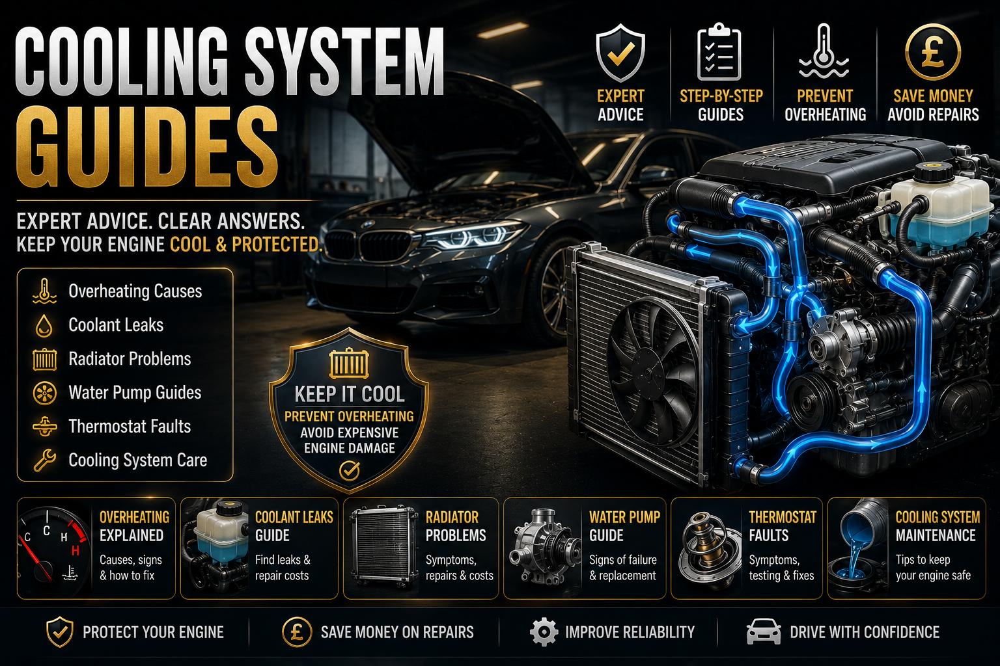

Coolant Warning Light On
What the coolant warning light means, when to stop, what to check first and when overheating becomes urgent.
Read guide →Cooling system faults can quickly become expensive if ignored. This UK mechanic-style hub brings together coolant warning lights, overheating, coolant leaks, radiator fans, thermostats, water pumps, blocked radiators, heater symptoms, white smoke and repair cost advice.

Do not ignore overheating, coolant loss, steam, white smoke, a rising temperature gauge or a coolant warning light. Driving an overheating engine can turn a small cooling fault into head gasket or engine damage.
Browse UK cooling system guides covering coolant leaks, overheating, radiator fans, thermostats, water pumps, white smoke, heater problems, coolant smells and repair costs.
Start here if your dashboard shows a coolant warning, the temperature gauge rises, or the car feels hotter than normal.
What the coolant warning light means, when to stop, what to check first and when overheating becomes urgent.
Read guide →Temperature gauge movement, thermostat behaviour, coolant level, air locks and sensor issues explained.
Read guide →Compare coolant warning lights, overheating symptoms, smells, smoke and temperature gauge faults.
Open app →Overheating can be caused by low coolant, leaks, radiator fan faults, thermostats, water pumps, blocked radiators or head gasket symptoms.
Simple safety advice for what to do when the temperature rises, steam appears or the engine overheats.
Read guide →Main overheating causes including coolant leaks, fan faults, thermostat problems, water pumps and blocked radiators.
Read guide →Why the engine overheats on the road, under load, at speed or during longer journeys.
Read guide →Overheating while stationary or in traffic often points towards radiator fan, airflow or coolant circulation issues.
Read guide →Traffic overheating symptoms, fan checks, coolant level, thermostat behaviour and radiator airflow.
Read guide →Why overheating can appear when air conditioning adds load to the cooling system.
Read guide →Coolant loss should never be ignored. Some leaks are visible, while others only appear when the system is hot and under pressure.
Coolant disappearing with no obvious leak, including pressure cap issues, heater matrix leaks, small external leaks and internal coolant loss.
Read guide →Common UK coolant leak repair costs including hoses, radiator, thermostat housing, water pump and head gasket concerns.
Read guide →Sweet coolant smells, heater matrix symptoms, leaks, overheating risk and what to check first.
Read guide →Bubbles in the coolant tank, trapped air, pressure issues and possible head gasket warning signs.
Read guide →Hot smells after driving can point towards coolant, oil, brakes, clutch or overheating-related issues.
Read guide →Main guide to burning, coolant, petrol, exhaust and rotten egg smells inside or around the car.
Read guide →If coolant is full but the engine still overheats, the issue may be coolant circulation, fan operation, thermostat control or radiator blockage.
Radiator fan faults, overheating in traffic, fan relays, fuses, temperature sensors and cooling fan checks.
Read guide →Thermostat symptoms, slow warm-up, overheating, poor heater performance and temperature gauge behaviour.
Read guide →Water pump failure signs including overheating, coolant leaks, noise, poor circulation and temperature problems.
Read guide →Blocked radiator signs, poor coolant flow, uneven heating, overheating and cooling efficiency problems.
Read guide →Why cooling fans can continue running after shutdown and when it may suggest a fault.
Read guide →Idle overheating often points towards fan, airflow, coolant circulation or thermostat issues.
Read guide →White smoke from the exhaust can be harmless condensation on cold mornings, but it can also point towards coolant entering the combustion chamber if it continues after warm-up, smells sweet, or appears with coolant loss and overheating.
If coolant keeps disappearing, the engine overheats, the expansion tank bubbles or white smoke continues, do not keep driving and guessing. These symptoms can become expensive quickly.
Steam from the engine bay, white smoke from the exhaust and coolant smell inside the car can point to different problems. The location, smell, temperature gauge and coolant level all matter.
The heater can give clues about coolant level, thermostat operation, heater matrix condition and air trapped in the cooling system.
No cabin heat can point towards low coolant, thermostat problems, heater matrix issues or air trapped in the system.
Read guide →Changing heater temperature can point towards air locks, coolant circulation problems, thermostat behaviour or low coolant.
Read guide →Heater smells can come from mould, coolant leaks, damp carpets, blocked drains or cabin filter issues.
Read guide →Mouldy air-con smells, damp vents, bacteria build-up and cleaning advice.
Read guide →Air conditioning performance issues, refrigerant, compressor and fan-related symptoms.
Read guide →Sweet smell in the cabin can suggest coolant vapour, heater matrix leaks or cooling system problems.
Read guide →Cooling system repair costs vary depending on the fault. A simple hose leak can be much cheaper than a radiator, water pump, thermostat housing or head gasket repair.
The important thing is not to keep topping up coolant without finding the leak. Repeated coolant loss usually means the system needs pressure testing or proper diagnosis.
In real garage work, cooling faults often start small. A driver notices the coolant level dropping, the heater blowing cold, the fan running loudly, the temperature gauge moving slightly or a sweet smell after driving. If those early clues are ignored, the car can eventually overheat badly.
The mistake many drivers make is topping up coolant again and again without finding where it is going. A cooling system is sealed. If coolant keeps disappearing, it has a reason: an external leak, pressure cap issue, heater matrix problem, water pump leak, radiator problem or internal engine concern.
The safest approach is to match the symptom pattern. Overheating in traffic often points towards fan or airflow issues. Overheating while driving can point towards coolant circulation, thermostat, radiator or water pump problems. Coolant loss with white smoke needs faster attention.
Think fan operation, radiator airflow, coolant level and thermostat behaviour.
Traffic overheating →Think pressure test, cap, hoses, radiator, heater matrix and small leaks.
Coolant loss guide →Do not ignore possible coolant entering the engine.
White smoke guide →Common questions UK drivers ask about coolant leaks, overheating, radiator fans and engine temperature problems.
Common issues include coolant leaks, low coolant, faulty radiator fans, thermostats, water pumps, blocked radiators, heater problems and head gasket symptoms.
Do not ignore it. Stop safely if the temperature rises, coolant is leaking, steam appears or the engine starts overheating.
Coolant loss can come from hoses, radiator, water pump, thermostat housing, heater matrix, pressure cap issues or internal engine problems.
Yes. Severe overheating can damage the head gasket, cylinder head, oil quality, cooling parts and internal engine components.
Traffic overheating often points towards radiator fan faults, poor airflow, low coolant, thermostat issues or radiator problems.
Overheating while driving can point towards coolant circulation problems, blocked radiator, thermostat, water pump or head gasket symptoms.
Persistent white smoke with coolant loss can suggest coolant entering the combustion chamber and should be checked quickly.
Costs vary depending on whether the fault is a hose, radiator, water pump, thermostat housing, heater matrix or internal engine issue.
Motor Vehicle Expert publishes practical UK cooling system, diagnostics, warning light, MOT, repair cost and used car buying guidance in clear mechanic-style language for everyday drivers.